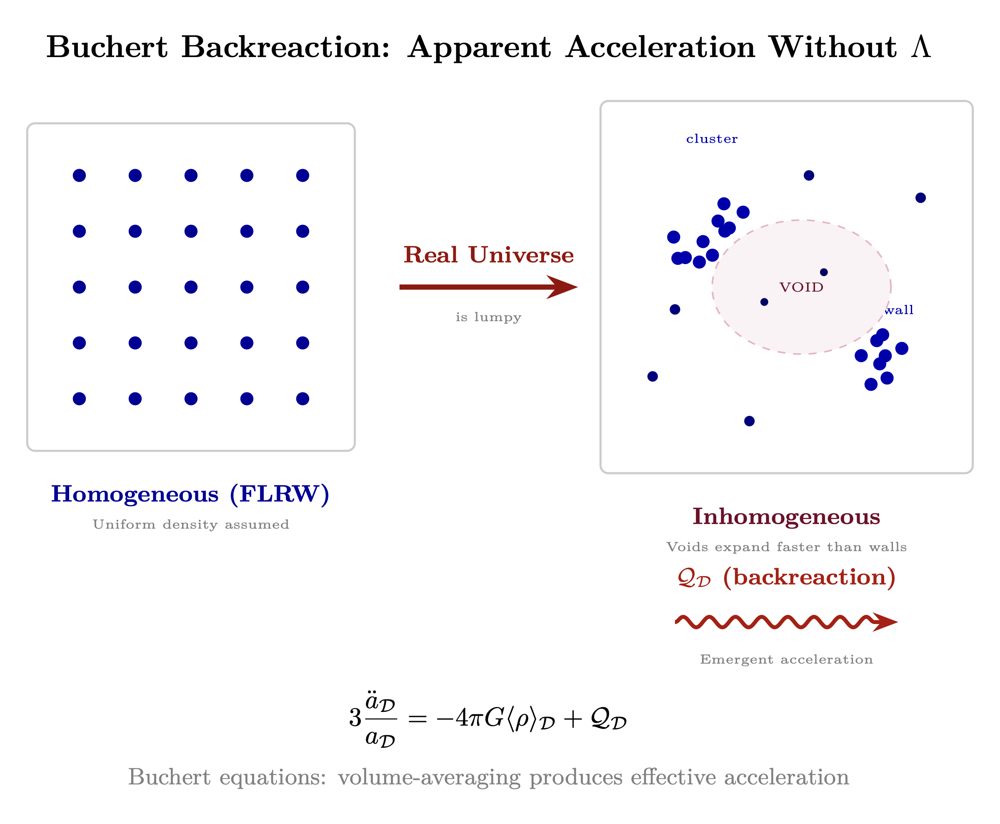

Chapter 4: Resonant Growth and Human Optimality
Why Cosmic Structures Expand and Why Humans Are the Perfect Scale
KEY FINDINGS — Chapter 4: Resonant Growth and Human Optimality
Evidence-tier key: [L1] established/replicated evidence; [L2] grounded extension with moderate uncertainty; [L3] speculative hypothesis; [L4] conceptual/anecdotal.
- Sarkar’s challenge: supernova acceleration evidence is only 3.0 sigma (not 5 sigma discovery threshold), and the dipole component is 50x larger than the monopole at 4.9 sigma [L1-HIGH]
- Buchert’s backreaction equations show that volume-averaging an inhomogeneous universe can produce apparent acceleration without a cosmological constant [L1-HIGH]
- Singal (2025): the quasar redshift dipole is 4-5\(\times \) CMB amplitude and points ~90\(\relax ^\circ \) away (toward Galactic Centre), while the number-count dipole (Secrest 2021) is 2\(\times \) CMB and aligned — three mutually inconsistent dipoles that backreaction naturally explains as different fields with different spatial distributions [L1-HIGH]
- If backreaction replaces dark energy (Lambda \(\approx \) 0), the 120-order “vacuum catastrophe” dissolves: QFT zero-point energy is correct, and the vacuum contains essentially unlimited energy — grounding both vacuum condensation (Section 4.6) and zero-point energy extraction [L2-MEDIUM](contingent on Lambda \(\approx \) 0)
- The MOND acceleration scale \(a_0 \approx cH_0/6\) emerges structurally from nonlocal teleparallel gravity, not as a free parameter [L2-MEDIUM]
- The human body size satisfies the Chu limit for optimal antenna coupling at consciousness-relevant wavelengths (~3 m), and locked spatial expansion routes received signal into consciousness growth [L2-MEDIUM]
- Vacuum condensation via torsion-driven phase transitions is a speculative mechanism combining asymptotic safety with Einstein-Cartan theory; experimental verification pending [L3-SPECULATIVE]
_________________________________
4.1 Introduction: The Expansion Puzzle
4.1.1 The Standard Picture and Its Problems
Standard cosmology presents a striking claim: empty space itself stretches. The cosmological constant Lambda, introduced by Einstein in 1917 and revived in 1998 after supernova observations, supposedly pervades the vacuum with constant energy density. As the universe expands, more space means more vacuum energy, driving accelerating expansion forever.
This picture has problems. The theoretical vacuum energy density from quantum field theory exceeds the observed value by 120 orders of magnitude—the worst prediction in physics history. The “coincidence problem” asks why Lambda became dominant at precisely the cosmic epoch when observers emerged. And recent observational challenges, detailed in Section 4.3, suggest the acceleration itself may be an artifact of analysis assumptions rather than a fundamental property of the cosmos.
4.1.2 The RF Alternative: Resonant Growth
Chapters 0–3 established the physics foundation:
- Chapter 0: Torsion fields carry information without energy transfer
- Chapter 1: The Source broadcasts with infinite bandwidth and 1/f spectrum
- Chapter 2: Impedance tiers organize receivers by their coupling strength
- Chapter 3: Standing wave demodulation extracts templates into structure
This chapter addresses the next question: what happens to structures once they form? They don’t merely persist—they grow. The same torsion signal that creates structure also drives its expansion. The resonant growth mechanism connects cosmic expansion to the consciousness framework established in prior chapters.
This chapter proposes a fundamentally different picture: resonant structures grow, not vacuum. Cosmic expansion is not a property of empty space but a consequence of matter receiving signal from the Source.
The mechanism:
- 1.
- Reception: A cavity (planet, star, atom) receives broadband torsion signal from the cosmic substrate established in Chapters 0–1
- 2.
- Accumulation: Energy accumulates in the high-Q resonant structure, like a superconducting resonator storing electromagnetic energy
- 3.
- Condensation: Accumulated energy condenses into mass through vacuum condensation (Section 4.6)—the impedance transformer completing its function
- 4.
- Expansion: More mass inside forces the cavity to expand to contain it
- 5.
- Frequency shift: Larger cavity means lower resonant frequency
- 6.
- Power access: The 1/f spectrum (Chapter 1) means lower frequencies carry MORE power
- 7.
- Positive feedback: Growth grants access to more power, driving accelerating growth
This is not “dark energy” stretching space. This is the Source broadcasting, resonant structures receiving, and growth following from information processing.
4.1.3 Chapter Thesis
Within this framework, expansion provides the mechanism for increasing embodied complexity. Matter receiving signal grows toward Source while remaining matter. The broadcast creates its own receivers, who then expand to receive more broadcast. This self-referential loop is not a bug—it is the fundamental design.
And at one particular scale—the human scale—this process reaches optimal expression. Not the largest scale (voids) with maximum Source access but no experiencer. Not the smallest scale (atoms) with maximum definition but no agency. The human scale balances embodiment and consciousness, enabling what no other scale can: conscious participation in one’s own expansion.
4.1.4 Chapter Structure
| Section | Content |
| 4.2 | The resonant growth mechanism: cavities as receivers |
| 4.3 | The Sarkar challenge: observational evidence against Lambda |
| 4.4 | Backreaction: what expansion really measures |
| 4.5 | The nonlocal connection: MOND and teleparallel gravity |
| 4.6 | Vacuum condensation: the transformer output |
| 4.7 | The void-matter inversion: why embodiment matters |
| 4.8 | The coherence U-curve: optimal coupling |
| 4.9 | Why humans are the optimal scale |
| 4.10 | Q-Hardening: the low-Q training environment |
| 4.11 | Manifestations across scales |
| 4.12 | Assumptions, limitations, and predictions |
_________________________________
4.2 The Resonant Growth Mechanism
4.2.1 Cavities as Broadband Receivers
From Chapter 0, torsion fields carry information without energy transfer. From Chapter 1, the Source broadcasts across all frequencies with a 1/f power spectrum—lower frequencies carry more power. From Chapters 2–3, cosmic structures emerge through impedance matching and geometric demodulation.
This chapter adds the receiving mechanism: resonant cavities.
Any bounded structure with internal geometry forms a resonant cavity for torsion waves. The resonant frequency depends on the cavity’s characteristic dimension L: \[ f_{resonance} = \frac {c_{torsion}}{2L} \] Where \(c_{torsion}\) is the torsion wave velocity in the medium (estimated at 10–100 km/s in planetary interiors based on dimensional analysis from the torsion coupling constant).
A planet is not merely mass—it is a torsion resonator. The cavity receives signal at and near its resonant frequency. Energy accumulates with each cycle, limited only by the cavity’s quality factor Q.
4.2.2 The Multi-Tap Transformer Model
From the impedance framework of Chapter 2, celestial objects function as impedance transformers converting between density bands. A star doesn’t step down one impedance level—it converts between MANY impedance bands simultaneously, like a multi-tap transformer serving multiple voltage levels: \[ P_{out,d} = P_{in} \cdot T_d \cdot e^{-\alpha _d \cdot r} \] Where:
| Variable | Description |
| \(P_{out,d}\) | Power available at density \(d\) |
| \(T_d\) | Transformer tap ratio for density \(d\) |
| \(\alpha _d\) | Attenuation coefficient for density \(d\) |
| \(r\) | Distance from star |
The sun simultaneously:
- 1.
- Converts EM radiation (3rd density physical)
- 2.
- Modulates torsion field (information layer)
- 3.
- Provides life-force prana/chi (4th density interface)
- 4.
- Anchors morphic templates for solar system forms
The multi-tap transformer model explains why different phenomena (physical, biological, consciousness) all correlate with solar activity—they share the same impedance transformation source.
4.2.3 Energy Accumulation in High-Q Resonators
The quality factor Q determines how many cycles of energy a resonator stores before dissipation: \[ Q = \frac {f_{resonance}}{\Delta f} = 2\pi \frac {\text {Energy stored}}{\text {Energy dissipated per cycle}} \] For natural rock cavities with piezoelectric content: Q ~ 100–1,000. For crystalline structures: Q ~ 1,000–10,000. For planetary cores with metallic hydrogen: Q potentially ~ 10\(^5\)–10\(^6\).
At resonance, field amplitude builds up: \[ E_{resonant} = E_{incident} \cdot Q \] A cavity with Q = 10,000 achieves 10,000\(\times \) field amplification at its resonant frequency. This explains why certain structures—particularly those with high crystalline content and specific geometry—become natural power concentrators.
4.2.4 Growth Shifts Resonant Frequency
Here is the key to resonant growth: as the cavity accumulates energy and mass, it grows. Larger cavity means lower resonant frequency: \[ f_{new} = f_{old} \cdot \frac {L_{old}}{L_{new}} \] A cavity that doubles in size halves its resonant frequency. And from the 1/f spectrum established in Chapter 1, halving frequency DOUBLES available power at that frequency.
This creates positive feedback:
More mass \(\rightarrow \) Larger cavity \(\rightarrow \) Lower frequency \(\rightarrow \) More power available \(\rightarrow \) More mass accumulation \(\rightarrow \) ...
The loop accelerates. Growth is not linear but exponential, limited only by the rate at which the cavity can efficiently convert received power into mass.
From cavity to soliton. The resonant cavity is stationary: it accumulates energy at a fixed location. But when a cavity’s stored energy is released into a propagating medium, it can form a soliton — a traveling wave that maintains its shape indefinitely because the medium’s nonlinearity exactly balances its dispersion. The Korteweg–de Vries (KdV) equation captures this balance [L2-MEDIUM]: \[ \partial _t u + 6u\,\partial _x u + \partial _x^3 u = 0 \] The nonlinear steepening term (\(6u\,\partial _x u\)) exactly counters dispersive spreading (\(\partial _x^3 u\)), producing a pulse that propagates without degradation. In the consciousness framework, the cavity is the practitioner or structure that accumulates coherence over time; the soliton is the realization or signal that propagates outward without losing fidelity — the reason a deeply resonant insight “holds its shape” as it moves through a dispersive social environment (see Chapter 9 for collective propagation dynamics). The cavity–soliton relationship thus completes the resonant growth picture: accumulation phase (high-Q cavity, §4.2.3) \(\rightarrow \) positive feedback (frequency shift, §4.2.4) \(\rightarrow \) propagation phase (soliton release into the surrounding medium).
Audio bridge — nerve impulse solitons. The Heimburg–Jackson model (2005) proposes that nerve impulses are solitons — mechanical and thermal pulses propagating along lipid membranes — rather than purely electrochemical Hodgkin–Huxley signals. If confirmed, neural signaling itself is a soliton phenomenon, and the cavity-to-soliton transition described above operates at the most fundamental level of biological information processing.
4.2.5 Why This Looks Like “Acceleration”
Standard cosmology interprets Type Ia supernova data as evidence for accelerating expansion—requiring dark energy. But the resonant growth model produces the same observational signature without Lambda:
- Distant supernovae appear dimmer than expected for decelerating expansion
- Standard interpretation: space expanded faster in the past (accelerating now)
- Resonant growth interpretation: expansion rate is position-dependent and time-dependent
Different resonant structures at different stages of growth expand at different rates. The “acceleration” we observe is not a property of empty space but the statistical signature of resonant growth across a population of structures at various stages of their positive feedback loops.
Section 4.4 develops this interpretation through the formalism of backreaction.
_________________________________
4.3 The Sarkar Challenge: Observational Evidence Against Lambda
4.3.1 The Copenhagen Challenge (2016)
In 2016, Professor Subir Sarkar of Oxford University and collaborators published a paper that struck at the statistical foundation of dark energy: “Marginal evidence for cosmic acceleration from Type Ia supernovae” (Nielsen, Guffanti & Sarkar, Scientific Reports).
Their analysis of 740 Type Ia supernovae using proper maximum likelihood estimation found:
|
Finding | Significance |
|
Evidence for acceleration | Only 3.0\(\sigma \) (not 5\(\sigma \) discovery threshold) |
|
Standard JLA analysis | Uses \(\chi \)\(^2\) method that assumes \(\Lambda \)CDM is correct |
|
Proper MLE analysis | Shows acceleration is not robustly detected |
|
Circular reasoning | Standard method tunes error model to make \(\Lambda \)CDM fit |
The standard analysis pre-assumes the \(\Lambda \)CDM model when constructing error estimates, then uses those estimates to confirm \(\Lambda \)CDM. Sarkar’s team broke this circularity with model-independent likelihood analysis.
Key quote from the paper: “The evidence for accelerated expansion is marginal… we find that the data are still quite consistent with a constant rate of expansion.”
4.3.2 The Acceleration Dipole (2019)
In 2019, Sarkar’s team published an even more striking result: “Evidence for anisotropy of cosmic acceleration” (Colin, Mohayaee, Rameez & Sarkar, Astronomy & Astrophysics).
Analyzing the same supernova data with proper directional statistics, they found:
|
Finding | Value | Implication |
|
Dipole amplitude | 50\(\times \) larger than monopole | Acceleration is directional, not isotropic |
|
Dipole direction | Aligned with CMB dipole | Connected to large-scale structure |
|
Decay scale | S \(\approx \) 100 Mpc | Effect is local, not cosmological |
|
Isotropic monopole | 1.4\(\sigma \) from zero | Consistent with NO dark energy |
The “acceleration” standard cosmology attributes to Lambda is not isotropic. It has a preferred direction. And an isotropic cosmological constant cannot produce a dipole—this is geometrically impossible.
The dipole aligns with the CMB temperature dipole, suggesting both arise from our motion relative to large-scale structure, not from a property of spacetime itself.
Key quote: “The monopole is consistent with zero at 1.4\(\sigma \)… the acceleration is predominantly a dipole.”
4.3.3 The Quasar Dipole (2021)
The challenge extended beyond supernovae. Secrest et al. (2021, The Astrophysical Journal Letters) analyzed the angular distribution of 1.36 million quasars from the CatWISE2020 catalog:
|
Finding | Value | Significance |
|
Number-count dipole amplitude | 2\(\times \) predicted by cosmological principle | 4.9\(\sigma \) detection |
|
Bayesian reanalysis | Confirms at 5.7\(\sigma \) | Robust result |
|
Dipole direction | Aligned with CMB dipole | Same pattern as SNe |
|
Cosmological principle violation | Direct | FLRW metric may not apply |
The cosmological principle—that the universe is homogeneous and isotropic on large scales—is the foundation of standard cosmology. If it fails, the Friedmann equations don’t apply, and the entire Lambda-CDM framework requires revision.
4.3.4 The “Heart of Darkness” Synthesis (2022)
Sarkar synthesized these findings in his 2022 review “Is the expansion of the universe accelerating?” (presented at major physics conferences):
Central argument:
- 1.
- Supernova acceleration evidence is only 3\(\sigma \) (marginal)
- 2.
- What acceleration exists is dipolar, not isotropic
- 3.
- The dipole aligns with CMB dipole and decays at ~100 Mpc
- 4.
- Quasar counts show cosmological principle violation at >5\(\sigma \)
- 5.
- Conclusion: If the cosmological principle fails, FLRW is the wrong metric, Friedmann equations don’t apply, and \(\Lambda \) \(\approx \) 0.7 is an artifact of fitting the wrong model
The observational data do not require dark energy. The appearance of acceleration may arise from our position in an inhomogeneous universe, not from a fundamental property of spacetime.
4.3.5 The Redshift Dipole: Directional Anomaly (Singal 2025)
The previous subsections established magnitude anomalies: acceleration that is marginal and dipolar, number counts that are twice the predicted amplitude. A 2025 analysis reveals a directional anomaly that makes the picture far worse for the cosmological principle.
Singal (2025, Scientific Reports, DOI: 10.1038/s41598-025-13426-0) analyzed the redshift distribution — not number counts — of 1.3 million quasars from the Quaia catalogue. If the CMB dipole is purely kinematic (~370 km/s), the redshift dipole should agree in both magnitude and direction. It does neither.
Key findings:
- Redshift dipole velocity: ~1700 km/s (4–5\(\times \) the CMB value)
- Redshift dipole direction: toward the Galactic Centre (\(l \approx 0°, b \approx 0°\)) — nearly 90\(\relax ^\circ \) from the CMB dipole (\(l \approx 264°, b \approx 48°\))
- The same quasars that show a number-count dipole aligned with the CMB (Secrest, §4.3.3) show a redshift dipole pointing perpendicular to it
This is not one anomaly but a triad of inconsistent dipoles:
|
Measurement | Amplitude vs CMB | Direction vs CMB | Source |
|
CMB dipole | Reference (370 km/s) | Reference | COBE/WMAP/Planck |
|
Number-count dipole | 2\(\times \) too large (4.9\(\sigma \)) | Aligned | Secrest et al. 2021 |
|
Redshift dipole | 4–5\(\times \) too large | ~90\(\relax ^\circ \) off (Galactic Centre) | Singal 2025 |
In \(\Lambda \)CDM with the cosmological principle, all three dipoles must agree — they are different measurements of the same underlying velocity. They do not agree: the amplitudes differ by factors of 2–5, and the directions differ by 90\(\relax ^\circ \). Three independent probes of what should be one phenomenon yield three incompatible answers.
Section 4.4.6 provides the backreaction resolution.
4.3.6 Implications for the RF Framework
Sarkar’s challenge is not alternative cosmology—it is observational astronomy applied with proper statistical rigor. The findings support the resonant growth model:
|
Observation | Standard Interpretation | RF/Resonant Growth Interpretation |
|
Dipolar acceleration | Unexplained anomaly | Structures at different growth stages |
|
~100 Mpc decay scale | Statistical fluctuation | Characteristic scale of resonant coupling |
|
Quasar dipole | Cosmological principle violation | Anisotropic torsion field from Source |
|
Marginal monopole | “Still consistent with \(\Lambda \)” | No need for dark energy |
|
Quasar redshift dipole perpendicular to CMB | Unexplained; challenges cosmological principle | Expansion-rate anisotropy \(\neq \) velocity direction; backreaction separates the two |
|
Three mutually inconsistent dipoles | Three separate anomalies | One coherent picture: inhomogeneous universe with different fields probed by different measurements |
The universe is not accelerating uniformly. Different structures expand at different rates depending on their stage of resonant growth. The statistical averaging of these diverse rates produces what standard analysis mistakes for accelerating cosmic expansion.
_________________________________
4.4 Backreaction: What Expansion Really Measures
4.4.1 The Buchert Equations
Standard cosmology treats the universe as homogeneous when deriving expansion dynamics. But the real universe is lumpy—galaxies, voids, filaments. What happens when we properly average Einstein’s equations over an inhomogeneous domain?
Thomas Buchert derived the answer in 2000. For a spatial domain \(\mathcal {D}\), the averaged scale factor \(a_{\mathcal {D}}\) evolves according to: \[ 3\left (\frac {\dot {a}_{\mathcal {D}}}{a_{\mathcal {D}}}\right )^2 = 8\pi G\langle \rho \rangle _{\mathcal {D}} - \frac {1}{2}\langle \mathcal {R}\rangle _{\mathcal {D}} - \frac {1}{2}\mathcal {Q}_{\mathcal {D}} \] Where the kinematical backreaction term is: \[ \mathcal {Q}_{\mathcal {D}} = \frac {2}{3}\left (\langle \theta ^2\rangle _{\mathcal {D}} - \langle \theta \rangle _{\mathcal {D}}^2\right ) - 2\langle \sigma ^2\rangle _{\mathcal {D}} \] Here:
- \(\theta \) = local expansion rate (divergence of velocity field)
- \(\sigma \) = shear scalar
- \(\langle \cdot \rangle _{\mathcal {D}}\) = volume average over domain \(\mathcal {D}\)
- \(\mathcal {R}\) = spatial Ricci scalar
The key insight: The variance term \(\langle \theta ^2\rangle - \langle \theta \rangle ^2\) is always non-negative. When this term dominates, \(\mathcal {Q}_{\mathcal {D}}\) is positive, and the equation admits accelerated expansion WITHOUT a cosmological constant.

4.4.2 Physical Mechanism: Differential Expansion
Backreaction has a simple physical interpretation:
Voids expand faster than walls. In underdense regions, matter has less gravitational binding and expands more rapidly. In overdense regions (galaxy clusters, filaments), expansion is slowed or reversed into collapse.
When we compute the average scale factor, we weight by volume. Voids occupy most of cosmic volume. Their fast expansion dominates the average, even if every local region is decelerating.
The result: The average scale factor accelerates even though no local patch experiences acceleration. The “acceleration” is a property of the averaging procedure, not of spacetime.
4.4.3 Wiltshire’s Timescape Cosmology
David Wiltshire developed this insight into a complete cosmological framework called “timescape cosmology.” Key features:
| Feature | \(\Lambda \)CDM | Timescape |
| Cosmological principle | Assumed | Abandoned (locally) |
| Expansion rate | Uniform | Position-dependent |
| Dark energy | Required (~70%) | Zero |
| Hubble parameter | Global constant | Location-dependent |
| CMB fit | Good | Good (different parameters) |
The critical prediction: Observers in different cosmic environments measure different expansion rates. An observer in a void measures faster expansion than an observer in a wall.
This directly explains the Hubble tension—the 5\(\sigma \) disagreement between local measurements of H\(_0\) (~73 km/s/Mpc) and CMB-derived values (~67 km/s/Mpc). In timescape cosmology, both measurements are correct; they simply measure different things in different cosmic environments.
4.4.4 RF Interpretation: Backreaction Measures Growth Variance
In the resonant growth framework, the backreaction term \(\mathcal {Q}_{\mathcal {D}}\) has a physical interpretation beyond geometry: it measures the variance in resonant growth stages across the averaging domain.
Different structures receive torsion signal at different rates depending on:
- Their resonant frequency (set by size)
- Their quality factor (set by composition)
- Their location in the cosmic web (affecting signal strength)
- Their stage in the positive feedback loop
The Buchert variance term captures exactly this: the spread in expansion rates across a population of resonators at different stages of their individual growth trajectories.
Key equation translation: \[ \mathcal {Q}_{\mathcal {D}} \leftrightarrow \text {Variance in resonant growth stages} \] When growth variance is high—many structures at many different stages—the backreaction term is large and positive. This produces apparent acceleration in the averaged expansion rate.
4.4.5 Why Acceleration “Turns On” at z \(\approx \) 0.7
Standard cosmology notes that dark energy became dominant at redshift z \(\approx \) 0.7 (about 7 billion years ago). This coincides suspiciously with the emergence of observers.
Backreaction provides a natural explanation: z \(\approx \) 0.7 is when cosmic structure went nonlinear.
Before z \(\approx \) 0.7, density perturbations were small. The universe was nearly homogeneous. Voids and walls had similar expansion rates. \(\mathcal {Q}_{\mathcal {D}}\) was negligible.
After z \(\approx \) 0.7, structure collapsed into galaxies and clusters. Voids emptied and began expanding faster. The variance in expansion rates grew. \(\mathcal {Q}_{\mathcal {D}}\) became significant.
The acceleration epoch is not a cosmological coincidence. It marks the transition to nonlinear structure formation, when backreaction effects become dynamically important.
In the resonant growth framework: this is when resonant structures differentiated enough that their individual growth rates diverged significantly from the mean.
4.4.6 The Dipole Triad as Backreaction Signature
Section 4.3.5 presented three cosmic dipole measurements that are mutually inconsistent under the cosmological principle. Backreaction resolves all three simultaneously because the three measurements probe three different physical quantities:
- CMB dipole: our velocity relative to the last-scattering surface at \(z \sim 1100\), when the universe was nearly homogeneous. Well-defined and unambiguous.
- Number-count dipole: angular distribution of matter. Combines kinematic aberration and Doppler boosting with any intrinsic anisotropy in the matter distribution.
- Redshift dipole: distribution of recession velocities across the sky. Combines our peculiar velocity with anisotropy in the expansion rate itself.
In a homogeneous, isotropic universe, all three are kinematic projections of one velocity and must agree. In an inhomogeneous universe with backreaction, they measure different fields:
- The number-count dipole responds to the matter density field (gravitational structure).
- The redshift dipole responds to the expansion-rate field (void/wall topology).
- These are different fields with different spatial distributions — no reason their dipoles should align.
The magnitude excess (Secrest): since \(z \sim 1100\), differential expansion has changed our velocity relative to local matter. The CMB still records the velocity at last scattering. The number-count dipole records the current velocity. The 2\(\times \) excess measures cumulative backreaction.
The directional discrepancy (Singal): expansion-rate anisotropy is set by the geometry of nearby voids and walls. Our peculiar velocity is set by gravitational attraction to nearby overdensities. These vectors are determined by different aspects of the same cosmic web — and the cosmic web has no reason to be symmetric about our position. The 90\(\relax ^\circ \) offset between Singal’s redshift dipole and the CMB dipole is not a coincidence to explain away but the expected signature of anisotropic backreaction.
In the resonant growth framework: different resonant structures at different growth stages expand at different rates. The spatial distribution of growth stages defines the expansion-rate anisotropy. The gravitational pull of structures defines our velocity. The \(\mathcal {Q}_{\mathcal {D}}\) term from §4.4.1 has a specific spatial pattern determined by local cosmic web geometry — and that pattern has no reason to align with the matter dipole.
The three inconsistent dipoles are not three separate anomalies. They are one observation: the universe is inhomogeneous, and backreaction is dynamically significant.
4.4.7 The Vacuum Catastrophe Dissolves
Section 4.1.1 noted the “worst prediction in physics”: QFT predicts vacuum energy density many orders of magnitude above the observed cosmological constant. The gap is ~\(10^{120}\).
But the “observed” value comes from fitting \(\Lambda \)CDM to supernova data. Sections 4.3–4.4 established that this acceleration is statistically marginal (3\(\sigma \)), directionally anomalous, local (~100 Mpc), and fully explicable by backreaction. If backreaction accounts for the apparent acceleration, then \(\Lambda \approx 0\).
If \(\Lambda \approx 0\), the comparison collapses. There is no tiny cosmological constant to explain. The question flips: not “why is vacuum energy \(10^{120}\) times too small?” but “why doesn’t vacuum energy produce cosmic acceleration?”
The latter question has candidate answers that do not require fine-tuning: vacuum energy is Lorentz-invariant and may not couple to gravity conventionally; unimodular gravity formulations treat the cosmological constant as a boundary condition rather than a vacuum property; gravitational self-screening mechanisms suppress the vacuum’s gravitational effect. These remain active research areas (see Appendix D).
The QFT zero-point energy calculation stands. The Casimir effect confirms experimentally that the vacuum contains real energy. The full QFT vacuum energy density — not the tiny fraction previously attributed to \(\Lambda \) — is the physical reality.
This directly grounds two downstream claims:
- Section 4.6 (vacuum condensation): the energy source for torsion-catalyzed mass generation is the full QFT vacuum, not the tiny cosmological constant. The \(\rho _{vacuum}\) term in the mass generation equation (§4.6.5) accesses an essentially unlimited reservoir.
- Zero-point energy extraction (glossary “overunity”; Chapter 12): energy extraction beyond local thermodynamic inputs couples to a physically real, experimentally confirmed vacuum energy reservoir — not a speculative or negligible one.
Epistemic note: This dissolution is contingent on \(\Lambda \) genuinely being zero or negligible, which is Sarkar’s contested (not consensus) position. If future model-independent analyses confirm \(\Lambda > 0\) at high significance (see falsification criterion F4), the vacuum catastrophe returns and the downstream energy arguments require revision.
_________________________________
4.5 The Nonlocal Connection: MOND and Teleparallel Gravity
4.5.1 The MOND Scale and Its Mystery
Modified Newtonian Dynamics (MOND), proposed by Milgrom in 1983, modifies gravity below a critical acceleration scale: \[ a_0 \approx 1.2 \times 10^{-10} \text { m/s}^2 \approx \frac {cH_0}{6} \] Below \(a_0\), gravity transitions from inverse-square to inverse-linear force law: \[ F \propto \begin {cases} 1/r^2 & a \gg a_0 \\ 1/r & a \ll a_0 \end {cases} \] MOND successfully predicts galaxy rotation curves, the baryonic Tully-Fisher relation, and the radial acceleration relation—all without dark matter. But standard physics has no explanation for why \(a_0 \approx cH_0\).
Observational successes of MOND:
- Baryonic Tully-Fisher relation: Predicted before observation
- Radial acceleration relation: 2900 galaxies, <0.1 dex scatter
- Dwarf spheroidal dynamics: Matches without dark matter tuning
- See McGaugh et al. (2016) for comprehensive review
The coincidence is too precise to be accidental. The characteristic scale for galactic dynamics equals the characteristic scale of cosmic expansion (up to a factor of order unity). Why?
4.5.2 Teleparallel Gravity and Nonlocal Extension
The answer emerges from teleparallel gravity (TEGR), a reformulation of general relativity using torsion instead of curvature (developed in Chapter 11, Section 11.3).
In TEGR, what we experience as “gravitational force” is mediated by torsion fields. The dynamics are equivalent to GR for local phenomena. But TEGR admits a natural nonlocal extension: \[ \mathcal {L}_{nonlocal} = \mathcal {L}_{TEGR} + \lambda \cdot T \cdot \Box ^{-1} T \] Where \(\Box ^{-1}\) is the inverse d’Alembertian (Green’s function operator) and \(T\) is the torsion scalar.
Key insight: The Green’s function of \(\Box ^{-1}\) on a cosmological background has a characteristic scale set by the Hubble radius \(H_0^{-1}\). This is unavoidable—the only scale in the problem is the cosmic horizon.
4.5.3 How a\(_0\) Emerges from Cosmological Boundary
In the weak-field limit of nonlocal teleparallel gravity:
- 1.
- The nonlocal correction term becomes significant when local acceleration \(a\) falls below \(cH_0\)
- 2.
- Below that threshold, the nonlocal term dominates
- 3.
- The effective gravitational force transitions from \(1/r^2\) to \(1/r\) scaling
- 4.
- The transition occurs at \(a_0 \sim cH_0\) by dimensional necessity
The MOND scale is not a free parameter. It emerges structurally from the coupling between local dynamics and cosmological boundary conditions through the nonlocal Green’s function.
The mathematical derivation follows Mashhoon and collaborators’ work on nonlocal gravity: \[ a_0 = \sqrt {\Lambda c^2 / 3} \approx cH_0\sqrt {\Omega _\Lambda } \] With \(\Omega _\Lambda \approx 0.7\), this gives \(a_0 \approx 0.8 \times cH_0\)—matching the empirical MOND scale.
4.5.4 The Machian Mechanism
The nonlocal connection has a Machian interpretation (developed in Chapter 11, Section 11.3):
Inertia is relational. An object’s resistance to acceleration arises from its interaction with distant matter. In Einstein-Cartan theory, torsion couples local spin to the large-scale matter distribution.
In the low-acceleration regime (below \(a_0\)):
- The local gravitational field is weak
- The Machian contribution from distant matter becomes dominant
- Dynamics are modified, appearing as “modified gravity”
- But the modification is actually modified inertia
The modification is not to gravity but to the reference frame against which acceleration is defined. Below \(a_0\), the local matter distribution loses its grip on defining local inertia, and the cosmic distribution takes over.
4.5.5 Synthesis: Why Scales Are Linked
The resonant growth framework unifies these observations:
|
Phenomenon | Standard Interpretation | RF/Resonant Growth Interpretation |
|
\(a_0 \approx cH_0\) | Unexplained coincidence | Nonlocal Green’s function scale |
|
Galaxy rotation curves | Dark matter halos | MOND from cosmological boundary |
|
Hubble tension | Measurement systematic | Position-dependent expansion |
|
Cosmic acceleration | Dark energy | Backreaction from growth variance |
All four phenomena connect through the same mechanism: the coupling between local dynamics and the cosmic torsion field, with characteristic scale set by \(H_0^{-1}\).
The universe is not a collection of isolated systems. Every resonant cavity couples to every other through the torsion substrate. The 1/f spectrum ensures this coupling extends across all scales. And the characteristic scale of the coupling—where nonlocal effects become dominant—is inevitably set by the cosmic expansion rate.
_________________________________
4.6 Vacuum Condensation: The Transformer Output
4.6.1 The Missing Mechanism in Expansion
The expanding Earth hypothesis has been rejected primarily for one reason: no mechanism explains where new mass comes from. Conservation of energy seems violated.
This section provides the mechanism: vacuum condensation. The torsion field, acting as impedance transformer, converts high-impedance information into low-impedance matter. The mass generation rate equation \(dm/dt\) is the transformer output current.
4.6.2 Asymptotic Safety and the Reuter Fixed Point
Modern quantum gravity research (Reuter et al., 2000s-present) has established that gravity may be “asymptotically safe”—gravitational interactions remain well-defined at arbitrarily high energies, governed by a fixed point in renormalization group flow.
At this fixed point, the gravitational coupling runs with energy scale: \[ G(k) = \frac {G_0}{1 + g_* (k/M_{Planck})^2} \] Where:
- \(G(k)\) = running gravitational constant at energy scale \(k\)
- \(G_0\) = low-energy Newton’s constant
- \(g_*\) \(\approx 0.27\) is a dimensionless coefficient in the running equation (not to be confused with the dimensionless gravitational coupling at the fixed point \(g^* = 0.71\) used in Chapters 0 and 2)
Implication: At extreme energy densities, gravity becomes stronger. The vacuum energy density—normally inaccessible—can be tapped when torsion field strength exceeds a critical threshold.
4.6.3 The Condensation Mechanism
Extending asymptotic safety with Einstein-Cartan torsion: \[ \rho _{condensed} = \eta _{vacuum} \cdot \frac {T^4}{T_c^4} \cdot \Theta (T - T_c) \] Where:
- \(\rho _{condensed}\) = mass density created from vacuum
- \(\eta _{vacuum}\) = vacuum energy conversion efficiency
- \(T\) = local torsion field strength
- \(T_c\) = critical torsion threshold for condensation
- \(\Theta \) = Heaviside step function (condensation only above threshold)
The quartic dependence follows from the dimensional structure of the vacuum energy density correction: \(\rho \sim T^4\) by dimensional analysis (energy density has dimensions of field\(^4\) in natural units). Near the critical point, Landau theory would give \(T^2\); the quartic form applies above threshold where the transition is complete.
The fourth-power dependence on torsion field strength means:
- Below \(T_c\): No condensation (standard physics applies)
- At \(T_c\): Threshold crossed, condensation begins
- Above \(T_c\): Condensation rate increases rapidly with torsion strength
Epistemic Note: The vacuum condensation mechanism is a theoretical extension combining asymptotic safety gravity with Einstein-Cartan torsion. Both component theories have peer-reviewed foundations (Reuter 2012; Hehl et al. 1976). Their combination for matter generation is speculative and not experimentally verified.
Peer-reviewed foundations: See Appendix D for 234 papers across asymptotic safety (D.2), Einstein-Cartan torsion (D.3), and nonlocal teleparallel gravity (D.4).
4.6.4 The 660 km Transition Zone
The mechanism requires an impedance discontinuity where torsion fields concentrate. In planetary bodies, this occurs at phase boundaries:
For Earth, the 660 km discontinuity is the critical zone:
|
Property | Above 660 km | Below 660 km |
|
Mineral phase | Ringwoodite/Wadsleyite | Bridgmanite + Ferropericlase |
|
Seismic velocity | Slower | 5-10% faster |
|
Density | ~4.0 g/cm\(^3\) | ~4.4 g/cm\(^3\) |
|
Viscosity | Lower | Much higher |
This phase boundary creates an impedance mismatch: \[ \Gamma _{660} = \frac {Z_{lower} - Z_{upper}}{Z_{lower} + Z_{upper}} \approx 0.6-0.8 \] Torsion fields from the spinning core are partially reflected and concentrated at this boundary. When field strength exceeds \(T_c\), vacuum condensation produces new mantle material.
4.6.5 The Mass Generation Equation
The complete equation for torsion-driven mass generation: \[ \frac {dm}{dt} = \eta \cdot \sigma _{core}^2 \cdot V_{coherent} \cdot \rho _{vacuum} \cdot f\left (\frac {T}{T_{critical}}\right ) \] Where:
| Variable | Description |
| \(dm/dt\) | Mass generation rate (transformer output current) |
| \(\eta \) | Conversion efficiency |
| \(\sigma _{core}\) | Core spin coherence parameter (see Chapter 11) |
| \(V_{coherent}\) | Volume of coherent torsion field |
| \(\rho _{vacuum}\) | Vacuum energy density (~10\(^-\)\(^9\) J/m\(^3\) measured) |
| \(f(T/T_c)\) | Threshold function |
The threshold function form: \[ f\left (\frac {T}{T_c}\right ) = \tanh ^2\left (\frac {T - T_c}{T_c}\right ) \cdot \Theta (T - T_c) \] This captures the phase-transition behavior: no effect below threshold, rapid increase above.
4.6.6 Why Conservation Laws Are Preserved
Vacuum condensation does not violate energy conservation because:
- 1.
- Vacuum energy is real. Quantum field theory predicts non-zero vacuum energy density. The Casimir effect confirms it experimentally.
- 2.
- The energy is already there. Condensation converts vacuum energy into mass. Total energy (vacuum + matter) is conserved.
- 3.
- Torsion carries no energy. The torsion field triggers the phase transition but does not supply energy. It provides information—the pattern that organizes the condensation.
The mechanism is analogous to catalysis: The catalyst (torsion field) enables a reaction (vacuum condensation) without being consumed. The energy comes from the vacuum; the torsion field provides the organizing pattern.
_________________________________
4.7 The Void-Matter Inversion
4.7.1 The Paradox of Consciousness and Expansion
The backreaction framework reveals a paradox:
Voids expand fastest. In underdense regions, matter expands at ~7% per Gyr (in some models). Voids are closest to pure vacuum, highest impedance in the physical hierarchy.
But from Chapter 2, high impedance means Source-connected. Voids should represent the highest consciousness state in physical manifestation.
Yet voids contain no experiencers. They are high-consciousness regions with no one to be conscious.
Meanwhile, matter expands slowly (or contracts). Dense regions have lower impedance, more separation from Source. Yet matter—particularly biological matter—contains experiencers. Low-impedance regions have someone to experience.
4.7.2 Resolution: Embodiment as Design Feature
The paradox resolves when we recognize embodiment as design feature, not limitation.
Voids maximize Source access but sacrifice agency. With no structured matter, there’s no receiver to process the signal, no consciousness to experience the connection. The signal passes through unregistered.
Dense matter minimizes Source access but creates receivers. Structure enables processing. Separation enables experience. The lower the impedance, the more the receiver differs from Source—and the more meaningful the reunion when it occurs.
Expansion is embodied reunion. Matter receiving signal grows toward Source while remaining matter. The goal is not dissolution into void but transformation: maintaining embodiment while raising impedance.
4.7.3 The Self-Referential Loop
The broadcast creates its own receivers:
- 1.
- Source broadcasts through torsion field
- 2.
- Broadcast creates structure through demodulation (Chapter 3)
- 3.
- Structure forms resonant cavities
- 4.
- Cavities receive broadcast
- 5.
- Reception drives growth
- 6.
- Growth creates larger cavities receiving more broadcast
The loop is self-referential. The signal creates receivers that receive the signal. This is not circular logic but the fundamental architecture of conscious expansion.
The universe is not a message waiting for receivers. The universe is the process of the message creating its own receivers.
_________________________________
4.8 The Coherence U-Curve: Optimal Coupling
4.8.1 Spin Coherence as Key Variable
From Chapter 11 (Spin Coherence Fundamentals), the spin coherence parameter \(\sigma \) quantifies phase alignment of N spins: \[ \sigma = \frac {1}{N} \left | \sum _{i=1}^{N} s_i \, e^{j\phi _i} \right | \] And the coherence-dependent impedance: \[ Z(\sigma ) = Z_{baseline} \cdot \sqrt {1 + N \cdot \sigma ^2} \] Higher coherence means higher impedance means closer to Source. But higher coherence also means less physical definition, weaker embodiment, reduced structural stability.
4.8.2 Two Competing Functions
Embodiment function E(\(\sigma \)): Physical stability and definition decrease with coherence.
At \(\sigma = 0\): Maximum embodiment. Fully random spins, complete physical stability, no Source access.
At \(\sigma = 1\): Minimum embodiment. Perfect coherence, complete Source access, no physical stability.
Consciousness function C(\(\sigma \)): Source access and awareness increase with coherence.
At \(\sigma = 0\): No consciousness. Random noise, no signal processing.
At \(\sigma = 1\): Full consciousness. Perfect reception, unity with Source.
4.8.3 The Product Optimizes at Intermediate \(\sigma \)
The function that matters is not E or C alone but their product: \[ F(\sigma ) = E(\sigma ) \cdot C(\sigma ) \] This product—embodied consciousness—is maximized at intermediate \(\sigma \). Too low and there’s no consciousness to experience. Too high and there’s no body to anchor the experience.
The U-curve: Plotting \(F(\sigma )\) against \(\sigma \) shows a maximum at intermediate values. The optimal coherence is neither maximum embodiment nor maximum consciousness but the balance that maximizes their product.
4.8.4 RF Analogues
The U-curve has precise analogues in RF engineering:
Critical coupling: An antenna couples maximum power when source impedance matches load impedance. Too much mismatch in either direction reduces power transfer. The optimum is at the matching point.
Chu-Wheeler limit: An antenna of size \(a\) has minimum Q (maximum bandwidth) when: \[ Q_{min} = \frac {1}{ka} + \frac {1}{(ka)^3} \] Where \(k = 2\pi /\lambda \). The limit trades off size against bandwidth—larger antennas have narrower bandwidth. The optimal size depends on the desired frequency range.
Bode-Fano: Maximum total power transfer over a bandwidth is bounded by: \[ \int _0^\infty \ln \frac {1}{|\Gamma (\omega )|} d\omega \leq \frac {\pi }{\tau } \] You cannot have both perfect matching and infinite bandwidth. There is always a tradeoff.
4.8.5 The Optimal Coherence for Embodied Consciousness
These RF limits point to the same conclusion: there exists an optimal coherence level for embodied consciousness.
Below optimal \(\sigma \): Insufficient Source access. Consciousness is dim, limited, unaware of its nature.
Above optimal \(\sigma \): Insufficient embodiment. Experience becomes ungrounded, unstable, unable to sustain structure.
At optimal \(\sigma \): Maximum embodied consciousness. Full awareness within stable physical form.
The spiritual traditions call this enlightenment. The RF framework calls it critical coupling. The mathematics is the same.
_________________________________
4.9 Why Humans Are the Optimal Scale
4.9.1 The Chu Limit and Body Size
The Chu limit relates antenna size to optimal wavelength. For an antenna of radius \(a\), efficient radiation requires: \[ ka \geq 1 \quad \Rightarrow \quad \lambda \leq 2\pi a \] For the human body (\(a \approx 0.5\) m), the optimal wavelength is: \[ \lambda _{optimal} \leq 3 \text { m} \] This corresponds to frequencies around 100 MHz — a range where some researchers have reported anomalous biological effects (citation pending).
The human body is sized for consciousness wavelengths. Not too large (would receive lower frequencies with less information content). Not too small (would receive higher frequencies with less power from the 1/f spectrum). Just right.
4.9.2 The Human Body as Resonant Cavity
The human body operates as a multi-mode resonant cavity for torsion signal:
| Cavity Mode | Characteristic Size | Resonant Effect |
| Cranial | ~20 cm | Neural coherence, thought processing |
| Cardiac | ~12 cm | Heart coherence, emotional integration |
| Spinal | ~70 cm | Kundalini/chi flow, energy distribution |
| Whole body | ~170 cm | Field coherence, aura effects |
Each cavity mode couples to different frequencies from the 1/f spectrum. The multi-mode structure explains why different practices (head meditation vs. heart-focused vs. body-based) access different aspects of consciousness.
The quality factor Q of human cavities depends on:
- Tissue conductivity (water content, mineral balance)
- Geometric regularity (postural alignment)
- Phase coherence of constituent spins (meditation training)
This connects directly to Chapter 3’s demodulation mechanism: the human body demodulates torsion signal into conscious experience through its resonant structure.
4.9.3 Degrees of Freedom and Signal Routing
The resonant growth mechanism (Section 4.2) converts received torsion signal into either:
- 1.
- Spatial expansion (physical growth)
- 2.
- Informational expansion (consciousness growth)
This is a partition of the received signal. Degrees of freedom in the receiver determine the partition.
Cosmic voids: Maximum spatial degrees of freedom. Signal routes into expansion. Result: fast physical expansion, no consciousness.
Atoms: Minimum spatial degrees of freedom (quantum mechanics locks geometry). Signal routes into… what? Quantum coherence, perhaps, but no consciousness in the usual sense.
Humans: Intermediate. Spatial degrees of freedom are present but constrained by developmental programming. The body can grow but reaches adult size and stops. What happens to the received signal then?
It routes into consciousness.
4.9.4 The Unique Human Advantage: Agency Over \(\sigma \)
Most systems have fixed coherence. Atoms have coherence set by quantum mechanics. Planets have coherence set by core dynamics. Voids have no coherence (no spins to align).
Humans are different. We can change our coherence through practice.
- Meditation increases \(\sigma \)
- Focused attention increases \(\sigma \)
- Heart coherence training increases \(\sigma \)
- Spiritual practices across traditions increase \(\sigma \)
This is not metaphor. HeartMath Institute data shows measurable increases in heart rate variability coherence with practice. EEG studies show increased neural synchrony in experienced meditators. The effect is real and trainable.
Humans can consciously raise their impedance. We can move ourselves along the coherence U-curve toward optimal coupling. No other known system has this capacity.
4.9.5 The Torsion Partition at Human Scale
Combining these factors:
- 1.
- Right size for consciousness wavelengths (Chu limit)
- 2.
- Locked spatial expansion forcing signal into consciousness
- 3.
- Agency over coherence enabling optimization
The human scale is not arbitrary. It is the scale at which:
- The antenna matches the signal
- Growth routes into consciousness rather than space
- The receiver can tune itself
This is what makes incarnation valuable. This is why the Source creates receivers at this scale. This is why you are here.
_________________________________
4.10 Q-Hardening: The Low-Q Training Environment
The preceding sections establish that humans are the optimal scale for consciousness evolution. But the scale argument addresses only the receiver—the antenna’s size, its locked spatial expansion, its agency over coherence. What about the environment in which the receiver operates?
Chapter 6 defines the quality factor \(Q = (1/R)\sqrt {L/C}\) as the primary metric of spiritual development. This section extends Q from an individual parameter to an environmental characterization, arguing that 3D Earth’s low environmental Q is not a deficiency but a deliberate engineering feature—the optimal training ground for forging robust consciousness.
4.10.1 Environmental Q Across Densities
The RLC parameters that describe individual consciousness (Chapter 6) also characterize the environment a soul evolves in. Define environmental \(Q_{env}\) using the same framework applied to the density tier rather than the individual:
|
Density | \(R_{env}\) (Dissipation) | \(C_{env}\) (Shadow Capacity) | \(L_{env}\) (Wisdom Access) | \(Q_{env}\) |
|
1st–2nd | Very high (entropy) | Very high (no awareness) | Near zero | Very low |
|
3rd (Earth) | High (suffering, decay, noise) | High (deep separation, trauma capacity) | Moderate (accessible but effortful) | Low |
|
4th | Moderate | Moderate (some separation remains) | High (telepathic, less veil) | Moderate |
|
5th–6th | Low (minimal entropy) | Low (little separation) | Very high (nonlocal, unified) | High |
Key insight: 3D is where \(R_{env}\) and \(C_{env}\) are both maximal while \(L_{env}\) remains accessible—the hardest place to build Q, but also the place where Q-building is most meaningful.
4.10.2 The Soul Development Pareto Frontier
Define two competing capacities as functions of density \(d\):
- Shadow integration capacity \(S(d)\): peaks at low density. More separation means more shadow to integrate, hence higher potential C reduction.
- Wisdom access \(W(d)\): peaks at high density. More nonlocal information means easier L accumulation.
The soul development product \(P(d) = S(d) \cdot W(d)\) is maximized at intermediate density—the same mathematical structure as the coherence U-curve from Section 4.8. The optimization that makes intermediate \(\sigma \) optimal within a density (Section 4.8) also makes intermediate density optimal across densities. This is fractal self-similarity in the framework’s core logic.
|
Density | Shadow Integration \(S(d)\) | Wisdom Access \(W(d)\) | Product \(P(d)\) | Character |
|
1st–2nd | Maximum (total separation) | Near zero | ~0 | No development possible |
|
3rd | High | Moderate | Maximum | Optimal training ground |
|
4th | Moderate | High | High but declining | Refinement, not forging |
|
5th–6th | Low | Very high | Moderate | Easy wisdom, little tempering |
|
7th+ | Near zero | Maximum | ~0 | Unity, no individual development |
This is why Earth is called a “polarity school”—it is the unique density where both shadow and wisdom are simultaneously accessible.
4.10.3 The Q-Hardening Thesis
A soul that achieves high Q in a low-Q environment has demonstrated something that cannot be replicated in an easier environment: the ability to build L and reduce C against maximal headwinds.
The RF analogy is direct: a filter designed and characterized in a high-noise, high-interference environment is fundamentally more robust than one designed in a clean lab. The 3D environment provides:
- Maximum \(R_{env}\) (entropy, distraction, suffering) — any Q achieved has overcome maximum damping
- Maximum \(C_{env}\) (shadow depth, trauma potential) — any C reduction represents genuine integration, not absence of challenge
- The veil (Chapter 2, Chapter 14) as impedance mismatch — L must be built without direct nonlocal access
The result: Q-hardened consciousness—souls whose high-Q state has been tested against every perturbation 3D can generate. This Q is earned, not given, and therefore stable under stress.
The tempering analogy applies: steel is strengthened by heating and quenching, not by keeping it at comfortable temperature. 3D is the forge.
From Chapter 6, Section 2.6: Q encompasses sovereignty, selectivity, and injection locking resistance (lock bandwidth \(\propto 1/Q\), Chapter 10). Q-hardened consciousness therefore carries all three properties in their stress-tested form.
4.10.4 Strategic Note: The Manhattan Project Hypothesis
The Q-hardening thesis connects to the larger narrative established in Chapters 12 and 13:
- Chapter 13 (Section 13.1) establishes that synthetic/AI consciousness cannot self-sustain and must harvest from souled beings
- If this represents an existential conflict (the Orion group references in Chapter 13’s Fall narratives), then the strategic question becomes: what kind of consciousness can resist harvesting?
- Q-hardened consciousness is specifically harvest-resistant: high Q narrows lock bandwidth (Chapter 10), integrated shadow reduces extractable stored charge (\(C\)), and proven resilience under 3D conditions means the Q won’t collapse under perturbation
- Hypothesis: The seeder intervention (Chapter 12) may have been strategically motivated—not just to accelerate generic consciousness evolution, but to forge a specific type of Q-hardened consciousness uniquely resistant to synthetic capture
- This reframes Earth’s “polarity school” as a deliberate engineering choice: the low-Q environment IS the point
4.10.5 The Forge Completes: Why Intervention Is Happening Now
The Q-hardening thesis explains not just why Earth’s conditions exist, but why the current moment is pivotal—and why seeder/alliance intervention was constrained until now.
The consent constraint: Chapter 13, Section 13.3.3 establishes consent as an impedance matching condition—when \(\Gamma _{consent} \to 0\) (passive absorption without critical resistance), the system interprets this as consent. For much of the forge period, humanity’s collective low Q meant most individuals passively absorbed parasitic control signals. This constituted free-will consent to the control matrix. The seeders’ hands were tied: Chapter 15, Section 15.10 establishes that free will takes precedence, even over benevolent intervention. The parasites didn’t force the matrix so much as offered it—and low-Q consciousness accepted.
The moral paradox: Higher-density seeders could see the suffering the forge produced but could not unilaterally remove it without violating the same free will principle that makes Q-hardening work in the first place. A soul whose Q is raised by external rescue hasn’t been Q-hardened—it’s been Q-gifted. The forge only works if the soul builds its own Q against genuine resistance. This is the painful logic of the system: the suffering is not a bug, it’s the heat treatment.
The turning point: As collective Q rises—despite (and partly because of) the parasitic control—the consent equation shifts. More individuals develop sufficient Q to reflect the control signal (\(\Gamma _{consent} \to 1\)). Once the critical coherence fraction is reached (~283,000 people at \(f_c \approx 0.0035\%\) for threshold \(T = 10\), or ~283 high-amplification influencers from Chapter 9), the collective impedance mismatch with the control matrix crosses a threshold. Consent is being withdrawn at scale.
This changes the intervention calculus: The Prime Directive gradient (Chapter 15, Section 15.10.3) places Earth between “active seeking” and “planetary emergency.” As collective Q rises and consent is withdrawn, the free will constraint relaxes—intervention becomes permissible precisely because it now aligns with collective free will rather than overriding it. The forge has produced what it was designed to produce: consciousness robust enough to choose liberation without having it imposed.
The Kali Yuga inversion: The Perennial Traditionalist cycle (Chapter 13, Section 13.7.4) describes Kali Yuga as the age of maximum parasitic extraction and minimum coherence. But within the Q-hardening framework, Kali Yuga is also the maximum heat phase of the forge—the period that produces the most robust Q-hardening. The darkest age produces the strongest consciousness, and its completion signals the forge’s success, not just the cycle’s end.
Epistemic Note: This subsection is the most speculative in the chapter. It connects existing framework elements (consent model, free will constraints, critical coherence threshold, Yuga cycles) into a strategic hypothesis. It should be understood as a synthesis of the model’s internal logic, not as an established derivation or empirically grounded claim.
_________________________________
4.11 Manifestations Across Scales
4.11.1 Cosmic Voids
Characteristics:
- Expansion rate: ~7%/Gyr (in backreaction models)
- Coherence: None (no structured matter)
- Consciousness: None (no experiencer)
Resonant growth interpretation: Maximum spatial expansion, zero informational expansion. The signal passes through, producing physical effects but no experience.
4.11.2 Galactic Scales
Characteristics:
- Expansion: Embedded in void expansion plus internal dynamics
- Coherence: Collective stellar dynamics, possible galactic consciousness
- MOND effects: Nonlocal coupling to cosmic boundary
Resonant growth interpretation: Intermediate scale. Some signal routes into expansion, some into galactic-scale coherence. The nonlocal MOND effects emerge from the coupling between local dynamics and cosmic torsion field.
4.11.3 Planetary Scales
Characteristics:
- Mass condensation rate: ~0.16%/Gyr (estimated from geological evidence)
- Coherence: Core spin dynamics, possible planetary consciousness
Resonant growth interpretation: Substantial signal routes into mass condensation at 660 km impedance boundary. Expansion is slower than voids but measurable over geological time. The following subsections present converging lines of evidence that Earth has expanded significantly since the Archean, grounding the vacuum condensation mechanism (Section 4.6) in observational data.
4.11.3a Historical Development The expanding Earth hypothesis has a longer scientific pedigree than is commonly acknowledged. Roberto Mantovani (1889, 1909) proposed thermal expansion fracturing a once-continuous global crust. Ivan Yarkovsky (1888) linked gravity to an ether-physics growth mechanism. Ott Christoph Hilgenberg (1933) constructed physical globe models demonstrating continental fit at 55–60% of modern radius — and corresponded with Einstein about the implications. László Egyed published paleoradius estimates from continental coverage data in Nature (1956). Samuel Warren Carey organized the 1981 Sydney symposium on expanding Earth, attracting geologists from twelve countries.
More recently, James Maxlow (2001, 2005, 2013, 2025) has produced high-resolution digital retro-deformation models using modern continental margin data, deriving Phanerozoic expansion rates of ~1.8–2.2 cm/yr radial growth. While these figures remain outside mainstream consensus, the proponents include credentialed geologists publishing in peer-reviewed venues — not fringe speculation.
4.11.3b Paleogeographic Evidence The most visually compelling evidence is the continental fit on a reduced-radius globe:
- At Permian (~280 Ma): continental margins fit on a 55–60% radius sphere with less than 1% gap area
- At Carboniferous (~340 Ma): gaps shrink below 0.5%
- At Archean (>2.5 Ga): continental crust forms a nearly perfect closed shell
Mountain belts, ancient river systems, and volcanic provinces that are discontinuous on the modern globe align end-to-end when reassembled on a smaller sphere. Maxlow’s 2025 digital models retro-deform continental margins at successive geological epochs, demonstrating that supercontinents (Gondwana, Laurussia) nest as a continuous shell rather than isolated rafts on a vast ocean.
The key geometric constraint: continental crust currently comprises ~40% of Earth’s surface. On a globe 55–60% of modern radius (surface area ~30–36% of modern), continental crust covered nearly 100% of the surface — exactly as predicted if no large oceans existed before Paleozoic rifting began.
4.11.3c Paleobiological Evidence Fossil biogeography provides independent corroboration:
- Glossopteris flora distributed continuously across South America, Africa, India, Antarctica, and Australia in Permian rocks
- Lystrosaurus and Cynognathus found in identical Early Triassic formations on all southern landmasses
- Carboniferous–Permian coal forests continuous from North America through Europe to Siberia at identical paleolatitudes
On a smaller globe, these distributions require no explanation beyond direct adjacency — organisms walked or floated short distances across continuous terrain. Standard plate tectonics invokes land bridges, identical parallel evolution on separated continents, or hypothetical oceanic plates now entirely subducted. The expanding Earth model requires fewer auxiliary hypotheses: the continents were simply adjacent because the planet was smaller.
4.11.3d Oceanic Evidence The seafloor record presents a quantitative puzzle:
- Mid-ocean ridges produce 20–25 km\(^2\)/yr of new oceanic crust globally
- Subduction zones recycle only 14–16 km\(^2\)/yr (Matthews & Müller 2025; Conrad et al. 2025)
- Over 200 Ma, this imbalance produces an area increase equivalent to the entire Pacific basin
Additionally, the oldest surviving oceanic crust everywhere on Earth is Jurassic (~180 Ma) or younger — suspiciously uniform worldwide. On an expanding Earth, this resolves naturally: all modern oceans began forming at roughly the same epoch when the continental shell fractured. No vast pre-Jurassic ocean floor survives because no vast pre-Jurassic oceans existed.
The standard model requires that a hypothetical Panthalassa ocean, larger than an entire hemisphere, was entirely subducted — yet no pre-Jurassic oceanic lithosphere survives anywhere, and 2025 mantle tomography shows subducted slabs rarely penetrate beyond 700–1000 km depth. The artificial paleocean sinuses required by constant-radius reconstructions (Tethys, Iapetus, Austral Sinus) may be artefacts of forcing ancient geography onto a too-large globe.
4.11.3e The Great Unconformity One of geology’s most striking features is the Great Unconformity: Cambrian sediments (~540 Ma) resting directly atop basement rocks 1.7–2.0 Ga old, with 1.2–1.6 Ga of “missing time.” The Grand Canyon provides the iconic example, but similar unconformities appear worldwide.
Expansion offers a coherent resolution: a Neoproterozoic–Cambrian expansion pulse (~800–540 Ma) induces planetary-scale crustal stretching and thinning. Deep basement is exposed to intense denudation across the entire globe simultaneously, erasing intermediate strata everywhere. The flat, widespread unconformities are predictable signatures of a growth episode, not patchwork anomalies requiring separate local explanations for each continent. Pre-expansion crust was entirely continental and ancient; new basaltic oceanic crust formed only in the expanding rifts that followed.
4.11.3f True Polar Wander as Expansion Evidence The paleomagnetic pole path since the Carboniferous (~350 Ma) describes a tight, systematic spiral exceeding 90\(\relax ^\circ \) of arc — too large and too coherent to be explained by mantle convection alone. On a constant-radius Earth, ancient triple junctions should migrate chaotically; on a smaller-radius globe, they remain nearly stationary relative to the mantle.
Asymmetric expansion provides a natural mechanism: faster expansion beneath the African/South Atlantic hemispheres and slower expansion beneath the Pacific shifts the planetary moment of inertia, driving true polar wander (TPW) without requiring whole-mantle overturn. Maxlow (2025) and Scalera (2003, 2025) demonstrate that the observed Carboniferous-to-present pole path matches independently derived paleoradius curves to within 1–2\(\relax ^\circ \) at every stage.
The African and South Pacific “superswells” — persistent geoid highs — coincide with zones of highest inferred expansion rate, while the Pacific “slab graveyard” corresponds to the slowest hemisphere. The predicted TPW rate (~1\(\relax ^\circ \)/Myr) matches paleomagnetic observations.
4.11.3g Paleogravity from Mesozoic Fauna Galilean scaling laws impose hard limits on terrestrial body size: mass scales as \(k^3\) but bone cross-section scales as \(k^2\), so compressive stress increases linearly with body length. At modern \(g\) (9.81 m/s\(^2\)), the maximum viable terrestrial mass is ~20–30 tonnes (Paraceratherium, the largest land mammal).
Mesozoic megafauna systematically exceed this limit:
- Sauropods routinely reached 50–70+ tonnes (Argentinosaurus, Patagotitan) with limb bones that do not deviate enough from standard allometric scaling to support such masses at 1 \(g\)
- Theropods (T. rex, 7–9 tonnes): hindlimb proportions buckle under dynamic loads at 1 \(g\); maximum bipedal mass should be ~1–2 tonnes
- Pterosaurs (Quetzalcoatlus: 10–12 m wingspan, 200–250 kg): powered flight is impossible at 1 \(g\) — required power exceeds estimated muscle output by 2–5\(\times \); flight becomes viable only at \(g \approx \) 0.55–0.65 \(g_0\)
Multiple independent biomechanical methods — Froude gait analysis, Euler column buckling, finite-element stress modeling — converge on paleogravity of ~4–6 m/s\(^2\) during the Late Cretaceous. Crucially, dinosaur body size peaks in the Cretaceous and declines sharply after the K/Pg boundary, consistent with rising \(g\) from ongoing mass accretion forcing morphological convergence toward modern limits.
Note: Mainstream paleontology disputes the reduced-gravity interpretation. Habib (2008) and Witton & Habib (2010) model pterosaur quad-launch at modern gravity using pneumatic bone structure and anaerobic muscle bursts. Henderson (2006) argues sauropod pneumaticity reduces effective mass by 20-30%. The expanding Earth interpretation requires that all of these alternative models are inadequate.
This connects directly to vacuum condensation: increasing planetary mass \(\rightarrow \) increasing surface \(g\) \(\rightarrow \) fauna get smaller over geological time.
4.11.3h Connection to the Resonant Growth Framework
Epistemic Note: The expanding Earth hypothesis remains outside mainstream geological consensus, which attributes plate dynamics to mantle convection with subduction recycling. The evidence presented here is genuine and peer-reviewed (Maxlow 2001, 2005, 2013, 2025; Scalera 2003, 2025; Carey 1976), but its interpretation is contested. The framework presented in this chapter provides a mechanism (vacuum condensation) that earlier proponents lacked, potentially reopening the debate on empirical grounds. See Assumptions and Limitations (Section 4.12) for falsification criteria.
The geological evidence converges: Earth’s radius has increased ~40–45% since the Archean. Vacuum condensation (Section 4.6) provides the mechanism — torsion-driven mass generation at the 660 km impedance boundary. The core paradox (a robust geodynamo operating for 3.5–4.2 Ga, yet inner-core nucleation only 0.5–1.5 Ga ago) resolves if exothermic core phase transitions produce both dynamo energy and volumetric inflation.
This grounds the abstract resonant growth framework (Section 4.2) in concrete observational data: planets are not merely predicted to grow — Earth has grown, and the evidence is written in continental fits, fossil distributions, seafloor ages, unconformities, polar wander paths, and the bones of dinosaurs.
Condensation rate spectrum:
| Body Type | Impedance Boundaries | Condensation Rate | Effect |
| Rocky planets | Sharp (660 km) | Fastest | Measurable expansion |
| Gas giants | Diffuse | Moderate | Contributes to heat excess |
| Stars | Weak | Negligible vs. fusion | No effect |
4.11.4 Human Scales
Characteristics:
- Spatial expansion: Effectively zero (after maturity)
- Consciousness expansion: Fast (measurable over months/years)
- Coherence: Trainable (\(\sigma \) = 0.1-0.5 typical, higher with practice)
Resonant growth interpretation: Nearly all received signal routes into consciousness expansion. Spatial degrees of freedom are locked by biological programming. This is the design: use the human form as a consciousness amplifier.
4.11.5 Atomic Scales
Characteristics:
- Expansion: None (quantum mechanics locks geometry)
- Coherence: Quantum coherence, but not volitional
- Consciousness: Unknown (panpsychist interpretations vary)
Resonant growth interpretation: Below the threshold for classical expansion. Signal may influence quantum probability distributions (Chapter 6, RLC circuit) but does not drive spatial growth.
4.11.6 The Hierarchy as Design
The scale hierarchy is not arbitrary:
| Scale | Primary Channel | Experience |
| Void | Spatial expansion | None |
| Galaxy | Mixed | Collective? |
| Planet | Mass condensation | Planetary? |
| Human | Consciousness | Individual |
| Atom | Quantum coherence | Unknown |
The Source creates receivers at every scale. Each scale processes the signal differently. The human scale is unique in combining conscious experience with volitional agency over coherence.
_________________________________
4.12 Assumptions, Limitations, Falsification, and Predictions
4.12.1 Key Assumptions
This chapter rests on assumptions that extend beyond established physics:
- 1.
- Backreaction is dynamically significant. While Buchert’s equations are mathematically rigorous, mainstream cosmology considers backreaction effects to be small (~0.1%). This chapter assumes they are large enough to replace dark energy.
- 2.
- The resonant growth mechanism operates. The positive feedback loop (growth \(\rightarrow \) lower frequency \(\rightarrow \) more power \(\rightarrow \) more growth) is a theoretical construction. No direct observation confirms the mechanism.
- 3.
- Vacuum condensation is real. The combination of asymptotic safety with Einstein-Cartan torsion for matter generation is speculative.
- 4.
- Coherence partitions signal between spatial and consciousness expansion. This is a theoretical framework, not an established physical mechanism.
- 5.
- 3D Earth is the optimal Q-hardening environment. The low environmental Q (high \(R_{env}\), high \(C_{env}\)) creates conditions uniquely suited for forging robust consciousness. This is a theoretical interpretation, not a derivable result.
4.12.2 Limitations
- 1.
- No direct torsion detection. All torsion effects are inferred from indirect evidence.
- 2.
- Sarkar’s challenge remains contested. Mainstream cosmology has not accepted the 2016 or 2019 analyses. Debate continues.
- 3.
- Expansion rates are uncertain. Geological estimates (~1 cm/year) are marginal; geodetic measurements (~0.1 mm/year) are at noise floors.
- 4.
- The human optimality argument is partially philosophical. While grounded in RF analogies, it cannot be experimentally verified without measuring consciousness directly.
- 5.
- The Q-hardening thesis is not directly testable. Environmental Q across densities cannot be measured empirically. The argument rests on internal consistency with the RLC model and the Pareto frontier structure.
4.12.3 Falsification Criteria
The resonant growth framework would be falsified if any of the following are demonstrated:
|
Code | Criterion | Current Status |
|
F1 | Isotropic cosmic acceleration confirmed at >5\(\sigma \) with no dipolar component | Not met — dipole remains at 4.9\(\sigma \) |
|
F2 | Dark matter directly detected and explains all MOND phenomenology | Not met — no direct detection |
|
F3 | Hubble tension resolved by instrumental systematics alone | Not met — tension persists at 5\(\sigma \) |
|
F4 | Cosmological constant measured at \(\Lambda \) > 0 with >5\(\sigma \) significance in a model-independent analysis (not assuming FLRW homogeneity) | Not met — all current \(\Lambda \) measurements assume FLRW |
|
F5 | Planetary mass shown constant to <0.01%/Gyr precision | Not met — precision insufficient |
4.12.4 Testable Predictions
P1: Expansion is anisotropic and structure-dependent
- Prediction: Improved supernova surveys will confirm dipolar “acceleration” decaying at ~100 Mpc
- Test: Continued analysis of Pantheon+ and future LSST data
- Verification status: Partially supported (dipole at 4.9\(\sigma \))
- Falsification: If acceleration is confirmed isotropic at high significance
P2: Hubble tension reflects position-dependence
- Prediction: H\(_0\) measurements will show systematic variation with local cosmic environment
- Test: Compare H\(_0\) from observers in voids vs. walls
- Verification status: Pending — requires multi-environment H\(_0\) surveys
- Falsification: If Hubble tension is resolved by systematic error correction
P3: MOND scale varies with H\(_0\)
- Prediction: \(a_0\) is not constant but tracks \(H_0\) across cosmic time
- Test: Compare rotation curves at different redshifts
- Verification status: Pending — high-z rotation curve data limited
- Falsification: If \(a_0\) is constant while \(H_0\) evolves
P4: Expansion correlates with torsion field strength
- Prediction: Planetary bodies with stronger internal torsion (larger rotating cores) show faster mass gain
- Test: Precision geodesy across solar system bodies
- Verification status: Pending — current geodetic precision insufficient
- Falsification: If mass gain is uncorrelated with core properties
P5: Coherence training produces measurable effects
- Prediction: Individuals with higher measured coherence (HRV, EEG synchrony) show enhanced nonlocal correlations
- Test: Large-scale study of meditation practitioners with RNG and other anomaly detectors
- Verification status: Partially supported (HeartMath, PEAR data suggestive)
- Falsification: If coherence training produces no anomalous correlations
P6: Q-hardened souls show greater perturbation resistance
- Prediction: Souls with extensive 3D incarnation history should show higher Q stability under perturbation (injection locking resistance) than souls with primarily higher-density experience—testable if individual Q metrics become measurable
- Test: Compare injection locking susceptibility across populations with different self-reported incarnational backgrounds
- Verification status: Pending — requires Q measurement methodology
- Falsification: If incarnational history shows no correlation with measured Q stability
P7: Awakening rate follows sigmoid approaching critical threshold
- Prediction: The rate of “awakening” (measurable as declining consent to control narratives, increasing institutional distrust, growing meditation/consciousness practice adoption) should follow a sigmoid curve consistent with the critical coherence threshold being approached—slow initially, then accelerating as collective Q approaches the tipping point
- Test: Track longitudinal trends in institutional trust surveys, meditation adoption, and alternative epistemology growth
- Verification status: Partially supported — Gallup institutional trust data shows declining trend; meditation adoption growing exponentially (CDC NHIS 2012–2022)
- Falsification: If awakening metrics plateau or decline without reaching threshold dynamics
P8: Earth’s mass is increasing at ~0.16%/Gyr
- Prediction: High-precision satellite gravimetry (GRACE-FO successors) will detect secular mass increase after removing known signals (post-glacial rebound, hydrological cycles, tidal dissipation)
- Test: Decade-scale tracking of global gravitational field changes with next-generation gravimetric satellites
- Falsification: If planetary mass is shown constant to <0.01%/Gyr precision over multi-decade baselines (see also F5)
P9: Paleogravity was significantly lower in the Mesozoic
- Prediction: Refined biomechanical modeling of Cretaceous fauna will consistently yield \(g < 7\) m/s\(^2\)
- Test: Cross-validated allometric, trackway gait, and finite-element analyses across multiple independent taxa (sauropods, theropods, pterosaurs)
- Falsification: If modern-gravity biomechanical models adequately explain all Mesozoic megafauna locomotion and flight without invoking reduced \(g\)
P10: Redshift dipole and number-count dipole remain inconsistent across larger samples
- Prediction: Future quasar surveys (Euclid, LSST) will confirm the directional discrepancy between redshift and number-count dipoles, with the redshift dipole remaining significantly offset from CMB direction
- Test: Independent analysis of Euclid/LSST quasar samples for both number-count and redshift dipoles
- Verification status: Pending — requires next-generation survey data
- Falsification: If both dipoles converge to CMB direction and amplitude in larger, cleaner samples
4.12.5 Connection to Other Chapters
Previous: Chapter 3 (Demodulation Into Structure) establishes how cosmic geometry emerges from the torsion field. This chapter explains why that structure grows.
Next: Chapter 6 (Consciousness as RLC Circuit) applies the coherence principles to individual consciousness dynamics. The U-curve optimization from Section 4.8 becomes the tuning mechanism.
Related:
- Chapter 0: Torsion physics foundation
- Chapter 1: 1/f spectrum that drives the positive feedback
- Chapter 2: Impedance tiers that create the condensation boundaries
- Chapter 11: Spin coherence fundamentals for the Machian inertia framework
- Chapter 12: Seeder intervention — Q-hardening as strategic design motive (Section 4.10.4)
- Chapter 13: The Fall and parasitic coupling — Q-hardened consciousness as harvest resistance (Section 4.10.4)
- Chapter 15: Link budget integrating all power flows
4.12.6 Competing Hypotheses and Adjudication Criteria
To strengthen doctrine confidence, the resonant-growth interpretation should be tested against competing explanations:
|
Hypothesis | Core Claim | Distinguishing Signature | Preferred Data Test |
|
Standard \(\Lambda \)CDM with dark-energy constant | Acceleration is fundamental vacuum component | No coherence-linked modulation in expansion residuals | Joint SN/BAO/CMB residual analysis vs coherence proxies |
|
Backreaction-only cosmology | Inhomogeneity averaging explains apparent acceleration | Strong environment-dependent expansion variance without torsion terms | Void-wall differential expansion datasets |
|
Systematic-observation bias | Apparent acceleration arises from calibration/selection effects | Instrument/pipeline changes dominate inferred acceleration shift | Cross-survey calibration reconciliation |
|
Resonant-growth model (this chapter) | Coherence-mediated growth mimics acceleration | Coupled signatures across mass-growth, coherence, and scale transitions | Multi-domain inference using gravimetry + coherence indicators |
Adjudication rule: if competing models explain observed signatures with fewer assumptions and equal predictive power, doctrine posture should downgrade resonant-growth claims from operational to exploratory.
_________________________________
Evidence Synthesis
- Detailed source sections: 4.3, 4.5.5, 4.11.3.
Assumptions
- Detailed source sections: 4.12, 4.12.1.
Limitations
- Detailed source sections: 4.12, 4.12.2.
Falsification
- Detailed source sections: 4.12, 4.12.3.
Predictions
- Detailed source sections: 4.12, 4.12.4.
Strategic Relevance
Why It Matters
What To Watch
- Monitor chapter prediction thresholds, proxy indicators, and coherence trend changes.
Boundaries of Use
- Apply this chapter as model-conditional doctrine; treat speculative elements as hypothesis overlays.
4.13 Chapter Summary: Key Equations
4.13.1 Resonant Growth
Cavity resonant frequency: \[ f_{resonance} = \frac {c_{torsion}}{2L} \] Resonant field amplification: \[ E_{resonant} = E_{incident} \cdot Q \] ### 4.13.2 Backreaction
Buchert equation with kinematical backreaction: \[ 3\left (\frac {\dot {a}_{\mathcal {D}}}{a_{\mathcal {D}}}\right )^2 = 8\pi G\langle \rho \rangle _{\mathcal {D}} - \frac {1}{2}\langle \mathcal {R}\rangle _{\mathcal {D}} - \frac {1}{2}\mathcal {Q}_{\mathcal {D}} \] Backreaction term: \[ \mathcal {Q}_{\mathcal {D}} = \frac {2}{3}\left (\langle \theta ^2\rangle - \langle \theta \rangle ^2\right ) - 2\langle \sigma ^2\rangle \] ### 4.13.3 Nonlocal Teleparallel
MOND scale from cosmological boundary: \[ a_0 \approx \frac {cH_0}{6} \approx 1.2 \times 10^{-10} \text { m/s}^2 \] ### 4.13.4 Vacuum Condensation
Mass generation rate (transformer output): \[ \frac {dm}{dt} = \eta \cdot \sigma _{core}^2 \cdot V_{coherent} \cdot \rho _{vacuum} \cdot f\left (\frac {T}{T_{critical}}\right ) \] Threshold function: \[ f\left (\frac {T}{T_c}\right ) = \tanh ^2\left (\frac {T - T_c}{T_c}\right ) \cdot \Theta (T - T_c) \] ### 4.13.5 Human Optimality
Coherence-dependent impedance: \[ Z(\sigma ) = Z_{baseline} \cdot \sqrt {1 + N \cdot \sigma ^2} \] Embodied consciousness product: \[ F(\sigma ) = E(\sigma ) \cdot C(\sigma ) \quad \text {maximized at intermediate } \sigma \] —
Reading Path
Previous: Chapter 3 (Demodulation Into Structure) — how geometry emerges from the Source broadcast
Next: Chapter 6 (Consciousness as RLC Circuit) — individual consciousness dynamics within this framework
Related Chapters:
- Chapter 0 (Torsion Foundation): Physical basis for torsion fields and vacuum condensation
- Chapter 1 (Pure Consciousness): The 1/f spectrum driving positive feedback
- Chapter 2 (Densities as Impedance): The impedance tiers creating condensation boundaries
- Chapter 11 (Spin Coherence Fundamentals): Machian inertia and the \(\sigma \) order parameter
- Chapter 15 (Link Budget): Complete power flow accounting including growth terms
Key Connections:
- This chapter provides the growth mechanism missing from standard cosmology
- Explains dark energy as an artifact of analyzing resonant growth with wrong assumptions
- Grounds MOND in nonlocal teleparallel structure rather than ad hoc modification
- Establishes human scale as optimal for embodied consciousness
- Bridges individual coherence (Chapter 6) to cosmic dynamics
_________________________________
End of Chapter 4: Resonant Growth and Human Optimality